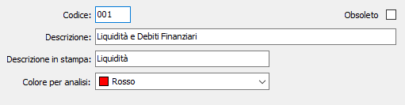

Voci analisi flussi
La procedura consente di inserire dei codici relativi a voci di aggregazione da utilizzare sulle voci di riclassificazione per la rappresentazione in forma di grafico nella relativa analisi flussi.

CODICE: codice alfanumerico di tre caratteri a libera scelta dell'utente. Sul campo è disponibile la funzione di ricerca (F9) sulla tabella stessa.
DESCRIZIONE: campo alfanumerico di 50 caratteri per inserire la descrizione estesa della voce utilizzata per lo zoom.
DESCRIZIONE IN STAMPA: campo alfanumerico di 20 caratteri per inserire la descrizione della voce da utilizzare in stampa e nelle legende dei grafici.
COLORE PER ANALISI: indica il colore che, nell'analisi flussi, sarà utilizzato per indicare la voce nella rappresentazione grafica.